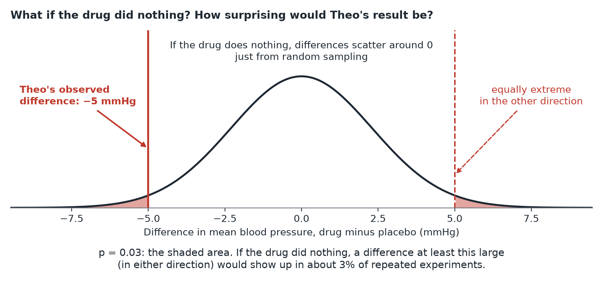

P-values and Significance
In plain terms: a p-value is the probability of seeing a result at least this extreme if there were truly no effect at all. It is not the probability that your hypothesis is true.
Remember that common tests used to get a p-value can usually be formulated as a regression (or GLM) model, which is usually a more informative approach (see Tests as regressions).
A concrete walk-through
Theo compares blood pressure between a drug group and a placebo group and gets p = 0.03. This means: if the drug truly did nothing, there'd be a 3% chance of seeing a difference this large (or larger) just from random sampling variation. Since 3% is fairly unlikely, Theo takes this as evidence against "the drug does nothing."

What it does not mean:
- It's not "there's a 97% chance the drug works." (That confuses the p-value with something it isn't — the probability of the hypothesis, not of the data.)
- It's not a measure of how big the effect is — a tiny, meaningless effect can still produce a small p-value with enough data (see Effect size).
- A p-value just above 0.05 doesn't mean "no effect" — it might just mean the study didn't have enough power to detect a real, smaller effect.
Where a p-value is (and isn't) appropriate
A p-value's advertised false-positive guarantee only holds for a single hypothesis decided before looking at the data — ideally one coming out of a well-designed, controlled experiment (see Exploratory vs. confirmatory analysis). Outside that setting — exploratory analysis, observational convenience samples, a comparison chosen after seeing the data — a p-value doesn't carry the meaning people assume it does, so skip it rather than report one; this is a question of using the right tool for the data at hand, not of trusting the number more or less.
Even inside that best-case setting, a p-value is a limited tool: collapsing a result to "significant" or "not" throws away how big the effect is and how uncertain the estimate is. Reporting the effect size with a confidence interval gets more out of the same data than the accept/reject decision does — see the next section.
Another, somewhat more radical, nuance is the one held by Andrew Gelman, who argues that we may learn more from a non-rejection of a hypothesis than from a rejection. Assuming that no null-effect exists, which is plausible in many fields, reaching statistical significance is only a matter of sample size but failing to reject a hypothesis can teach you that something's off, that your measurements are inaccurate or your design wrong or the effect varies widely across contexts. All this is valuable information.
Significance level (alpha) and the 0.05 convention
Before running a test, you pick a threshold (alpha) — conventionally 0.05 — below which you'll call a result "statistically significant." This is a convention, not a law of nature; there is no meaningful difference between 0.05 and 0.06 as a cutoff. Treating it as a hard boundary between "true" and "not true" is a common misunderstanding.
Confidence intervals: often more useful than a single p-value
A confidence interval (CI) gives a range of plausible values for the true effect, not just a yes/no verdict. "Carriers had LDL cholesterol 0.4 mmol/L higher than non-carriers (95% CI: 0.1 to 0.7)" tells you the likely size of the effect and how uncertain that estimate is — strictly more informative than "p = 0.03." When possible, report both the effect size and its CI, not just the p-value.
The takeaway
A p-value is only well-calibrated for a single hypothesis decided before seeing the data, ideally from a well-designed experiment — outside that setting, don't compute or quote one. Even inside it, don't let it be the final word: report the effect-size estimate and its confidence interval as the headline, and treat the significant/non-significant verdict as optional extra context, not a substitute for them.